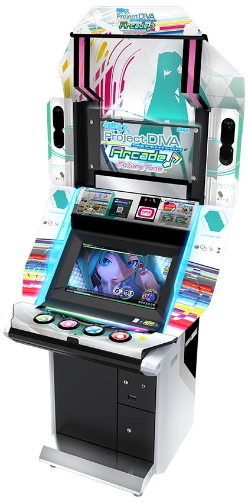
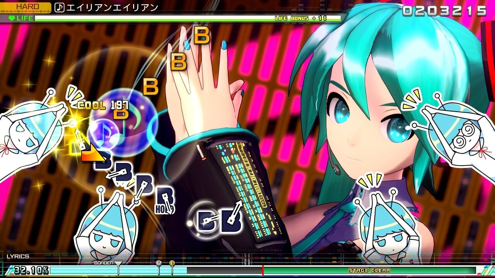

Hatsune Miku: Project DIVA Arcade
Overview
Hatsune Miku: Project DIVA Arcade (初音ミク -Project DIVA Arcade-) is a 2010 arcade rhythm game created by Sega and Crypton Future Media for arcade machines. The game is a port of the 2009 video game, Hatsune Miku: Project DIVA, with updated visuals and was released on January, 2010 in Japan with limited international release in countries such as Singapore. Like the original the game primarily makes use of Vocaloids, a series of singing synthesizer software, and the songs created using these vocaloids most notably the virtual-diva Vocaloid Hatsune Miku.
 Versions
A sequel titled Hatsune Miku: Project DIVA Arcade Future Tone (初音ミク -Project DIVA Arcade Future Tone-) was released on November 21, 2013. Notable changes include upgraded graphics and physics, a Touch Slider panel for arrow shaped notes and new songs, as well as running on the Sega Nu arcade board.
- Hatsune Miku: Project DIVA Arcade (2010)
- Hatsune Miku: Project DIVA Arcade Version A (2011)
- Hatsune Miku: Project DIVA Arcade Version B (2012)
- Hatsune Miku: Project DIVA Arcade Future Tone (2013)
- Hatsune Miku: Project DIVA Arcade Future Tone Version A (2014)
- Hatsune Miku: Project DIVA Arcade Future Tone Version B (2016)
Licensing
Nam id justo fringilla, pharetra dolor et, ultrices purus. Cras vitae commodo lectus. Aliquam commodo vestibulum nisl, eget sagittis diam auctor varius. Pellentesque auctor mauris nisl, non auctor tortor cursus ut. Nunc vel tincidunt elit. Vivamus varius augue libero, ut sagittis sapien volutpat a. Donec nulla diam, eleifend at sapien at, dapibus tempor ipsum. Pellentesque massa dolor, ullamcorper sed gravida eu, porta at tortor. Pellentesque condimentum libero sed augue venenatis posuere. Sed aliquet orci ac felis imperdiet, vitae scelerisque augue sollicitudin. Cras quis egestas elit, nec efficitur nunc.
Shipping
In eget dolor enim. Pellentesque habitant morbi tristique senectus et netus et malesuada fames ac turpis egestas. Sed fringilla quam sem, sit amet mollis libero malesuada eget. Donec congue mollis velit vitae sollicitudin. Aliquam ullamcorper pellentesque volutpat. Fusce volutpat fringilla nunc, sit amet maximus nisl pellentesque sit amet. Duis non tempor libero, non lobortis erat. Cras vel nisi enim. Nulla quis ante luctus, tempus purus vitae, maximus dolor. Nam augue purus, dictum eget arcu sed, dignissim finibus sem. Integer tempor sem vel est maximus bibendum.